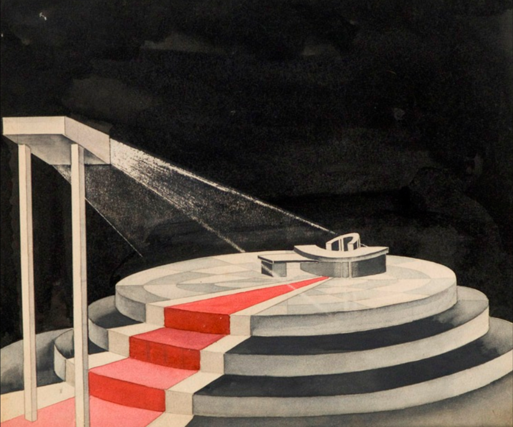
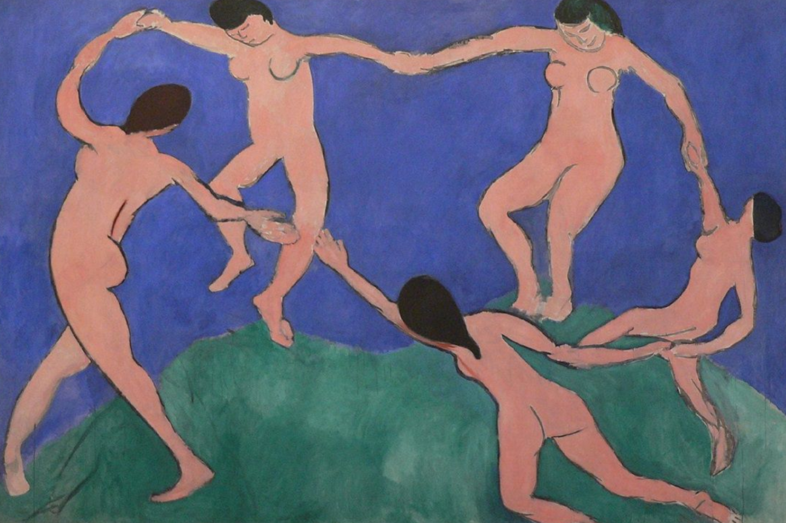
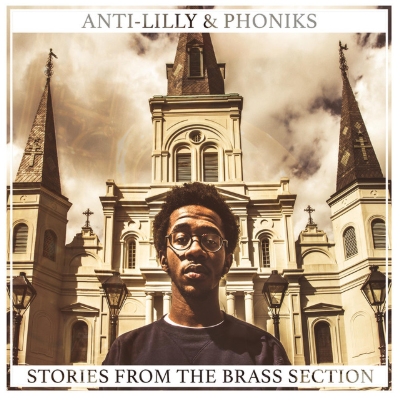
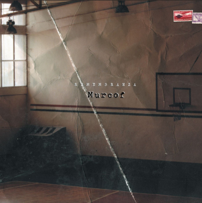

<DOCTYPE html>
<html>
  <head>

    <link href="mainstyle.css" type="text/css" rel="stylesheet" />
  <link rel="shortcut icon" href="images/resettitle.ico" type="image/ico">
    <title>reset your perspective</title>
  </head>
  <body>
    <div class="container_12" clearfix>
      <div class="header grid_12">
        <p class="title">
          reset
        </p>
        <p class="titledesc">
          let thoughts catch up
        </p>

      </div>
      <div class="navigation grid_12">
            <p id="rst001">rst001</p>
          <p>
            <ul>
            <li><a href="#chapter1">chapter 1</a></li>
            <li><a href="#chapter2">chapter 2</a></li>
            <li><a href="#chapter3">chapter 3</a></li>
            <li><a href="#chapter4">chapter 4</a></li>
            <li><a href="#chapter5">chapter 5</a></li>
            <li><a href="#chapter6">chapter 6</a></li>
            <li><a href="#chapter7">chapter 7</a></li>
          </ul>
        </p>
      </div>

      <div class="chapter grid_8 push_2">
        <p id="chapter1" class="chaptertitle">
          chapter 1
          <br>
          the one who’s focussed
        </p>
        <div class="chaptertext">

            <ul>
              <li> <a href="https://www.youtube.com/watch?v=9UCWvcJAy6k&list=PL2BBFi7UvppsOWLIbPePECeAxF-axrDfa">playlist</a></li>
              <li> <a href="http://booksdescr.org/item/index.php?md5=0C56E2A8692382AC726948EE1AEA0C78">book 1</a></li>
              <li> <a href="http://booksdescr.org/item/index.php?md5=512e828a4140b74088a11c6a26976351">book 2</a></li>
            </ul>
<p>             Sitting here alone. The office is silent, the chair is comfortable; Saturday has arrived, and I can finally take the time to reset my mind.
<p>          The business kids are working from home, designers probably wasting money at high margin coffee shops, and the other devs were still waking up. Meanwhile, I’m here, reaping the benefits of an empty office and stocked kitchen.</p>
<p>          Nothing but the best.</p>
<p>          Once a week, seated in this chair, I spend some time developing future memories. Something once done to escape reality had now ironically become the core lens with which I viewed it.</p>
<p>          Each week a new great discovery. Each week rising to international fame.</p>
<p>          Exhausted and excited. This was the tightrope I’d been balanced on for as long as I could remember, and with each passing day it seemed to grow exponentially. Excited and exhausted.</p>
<p>  </p>
<p>          Rising from rest, I maneuvered my body to the kitchen. Open the fridge - free food. I see a flashing note, directed to me, on the fridge’s screen; an idol from my university days:</p>

<p class="generalquote">              Urgent: Deadline project x team y in 7 days (March 30).
<br>          technical problems :
<br>          	~~~~~~~~
<br>          	~~~~~~~~
<br>          	~~~~~~~~
<br>          Stand-up 10 AM monday room 1, think & discuss solutions.
<br>          attendance: teams ~, @, #
<br>          -x
      </p>

<p>          Heroes from my past, once elevated on pedestals, had now become colleagues.</p>
<p>          Projects from my dreams, once fake memories and reasons for my imagined rise to fame, had now become real projects to work on whenever inspiration struck.</p>
<p>          The future was inevitable, and I would be the shepherd.</p>
<p>          This didn’t mean that there was no work to be done. For the world to be shaped how I wanted it would take at least another 20 years and a great deal of work. But in the end, I knew I would be the key person to make Artificial General Intelligence (AGI) a reality.</p>
<p>          I steered my body to my desk, and placed it into my chair.</p>
<p>          Immersed in the morning routine; reviewing papers passed on by peers, notes made from previous days.</p>
<p>          Meta-learning & AI self improvement were my speciality.</p>
<p>          I knew everyone felt their work was the most critical for the future, but they were wrong to waste their time. The fastest path towards AGI would be if the program could program itself.</p>
<p>          My life’s work: developing a software that could optimize itself, releasing this software out into the world, and have it continuously iterate on itself becoming more and more intelligent by the day.</p>
<p>          This was the most important area of research for AGI, and if we were ever going to be able to save this doomed world, we would need it as soon as possible.</p>
<p class="personalquote">          I see you.</p>
<p class="personalquote">          Lurking in the shadows.</p>
<p class="personalquote">          Regulation, negative media, social criticism.</p>
<p class="personalquote">          You’re all wrong - you simply just don’t understand - you’ll see.</p>
<p>          The day to day grind often felt like a race against time. An invisible enemy working against progress.</p>
<p class="personalquote">          Imagine a world where the problems of famine, disease, poverty, and climate change were things of the past.</p>
<p>   </p>
<p>          I see the future as a blank slate filled with positive potential. Positive potential to be filled by technology. This was the only idea originating externally that I adopted as part of myself: I am a techno-utopist.</p>
<p>          A techno-utopia could come about in many ways, but the core ideology stayed the same.</p>
<p>          Decreases in business cost due to reduced labor, optimized processes, and automated work.</p>
<p>          Benefits passed onto consumer due to lower product and service costs, leading to an overall increased standard of living.</p>
<p>          Over time the costs would continue to decrease until reaching an overall zero, the demonetization of all services, caused by AI managing the complete lifecycle of both humanity and itself.</p>
<p>          We would finally escape from the shackles imposed by nature.</p>
<p class="personalquote">          I walk down the street beaming beautiful light.</p>
<p class="personalquote">          A world without economic or technological worries.</p>
<p class="personalquote">          Humanity finally comfortable; able to focus on long term thoughts.</p>
<p>          These feelings bolt through my senses, leaving remnants, an impatient fire pulsing through my veins. It takes only a moment, and all my previous exhaustion is overtaken by this starving hunger for progress.</p>
<p class="personalquote">          “FORWARD AT ALL COSTS! ALWAYS FORWARD”</p>
<p>          The motto, picked up from some source of past readings, blinks brightly in my vision. Its momentum shoves my sight forward, towards my screen.</p>
<p>          Thoughts of a sedentary lifestyle had never occured to me. Always forward, whatever the cost.</p>
<p class="personalquote">          Earth fading in the future - a probable possibility.</p>
<p>          I knew if I couldn’t make life more efficient, more intelligent, humanity would be destined to walk through the dark tunnel of limited perspective forever.</p>
<p>  </p>

<br>
<p>          	complete concentration,
<br>          		momentum shoving me forward,
<br>          	trapped in a tunnel of previous postulations
<br>
<br>          visions of light,
<br>          	just beyond the horizon,
<br>          		waiting to be embraced
<br>
<br>          	a directed mind -
<br>          		forgetting past,
<br>          			ignoring present,
<br>          				imagining future
<br>
<br>          weight of world overhead suffocates,
<br>          darkness surrounding sparks terror of unknown
<br>
<br>          	cold sweat, rushed pace,
<br>          	sensing an inevitable destiny
</p>

</div>
<div class="albums">
<a href="https://open.spotify.com/album/1iYuqmkhvfNCTpo94ZjVuY"></a>
<a href="https://open.spotify.com/album/1uzfGk9vxMXfaZ2avqwxod"></a>
<a href="https://open.spotify.com/album/4z3XljyOyVeBiFEQbix0ev"></a>
<a href="https://open.spotify.com/album/6GRzmk9UGL7odxprOPop1Q"></a>
<a href="https://open.spotify.com/album/32kkHw8GnItrzLQ1qwupbJ"></a>
 <a href="https://open.spotify.com/album/47nWcb5GzhgGNzJuCJgiPN"></a>
 <a href="https://open.spotify.com/album/7Der8eY3aiNi3cieeMBRFB"></a>
 <a href="https://open.spotify.com/album/4YAk2DfUOvDxAnoX9cstoh"></a>
 <a href="https://open.spotify.com/album/2s0y5BFQpUv5YiXsezn4rL"></a>

</div>

        <br><p><a href="#rst001">to top</a></p>
      </div>
      <div class="chapter grid_8 push_2">
        <p id="chapter2" class="chaptertitle">
          chapter 2
          <br>
          the one who’s mulled
        </p>
        <div class="chaptertext">
          <ul>
            <li> <a href="https://www.youtube.com/watch?v=ihyQf8mww3o&list=PL2BBFi7Uvppsas7baCAS0mzdSg3-HLxhX">playlist</a></li>
            <li> <a href="http://booksdescr.org/item/index.php?md5=07eb83ec368dfb7904c93c8b022cad2f">book 1</a></li>
            <li> <a href="http://booksdescr.org/item/index.php?md5=c3460a64999e3fe50d76ce10cbc4aaa6">book 2</a></li>
          </ul>
<p>              	“Life’s going to be hella different, I tell you man.</p>
<p>          	“Yeah - we’re fucked.</p>
<p>          	“ Like…. you’re such a positive guy all the time, but whenever we’re talking about this, you assume everyone’s just going to rebel and we’ll have, like, a global civil war.</p>
<p class="personalquote">          	“Guys please not again, I’m just trying to enjoy some churros.</p>
<p>          	“Dude a global civil war where it’s humans who are slaves and robots controlling us. Like we don’t even know how to control tech when it’s just ads and shitty apps. People lose their lives in their phones. Imagine your phone started talking to you like “Dudeee.. You know that girl you stalked on social media for 45 minutes yesterday? She just posted a new pic - check it out - you know you want to.” We’d have to fight them out of our lives.</p>
<p>          	“No way it would talk like that or I’d throw it in the trash.. they’ll be smarter than us. Like, imagine just having the perfect thinking machine to do all the work for you. We wouldn’t have to have conversations like these worrying about the future because they’d handle the bullshit for us. We could just chill around all day.</p>
<p class="personalquote">          			“That’s legit what we do all the time anyway man - nothing's going to change.</p>
<p>   </p>
<p>          	“That’s what I’m saying man - you won’t be able to put down your phone. it will constantly be sweet talking you. everyone wearing earpods, talking with their dream robot friend, clueless of their surroundings. Jeezus I’d just off myself man - life would be so depressing.</p>
<p>          	“Yo fuck off man? Once the memes die about earpods you’ll want to wear them too. They’re more convenient, better quality… life’s just better with them around. You can’t just hate on every piece of new tech because it’s new. What’s so wrong with improving life around us.</p>
<p>          	“Because it’s never just making the world a better place. Someone always loses. Like don’t you think about the fact every company is collecting data on you?</p>
<p>          "Did you see the article of that girl who was pregnant, didn’t know it, but based on what she searched, some companies knew because they, like, linked her searches to a bunch of other people who were pregnant and did the same searches or something. And then she got an actual letter sent to her house saying “Congratulations!!! Here’s tips on how to have a healthy pregnancy!!” except her parents got it instead of her, and they kicked her out of the house?</p>
<p>          	“Bruh that’s such a dumb example. First off what normal company uses physical mail anymore, and second, how could she not know she was pregnant if all of her searches must have been practically telling her. Plus you can totally see this from the other angle. You’re searching for something because you feel bad, and you get a recommendation that says you might have a certain illness? Now you can get the cure faster, live instead of die.</p>
<p>          	“Companies still use mail because ‘surprisingly’ people can still be influenced by them... and what… your robot friend is going to be right all the time? We’ll end up putting all of our trust in them and we’ll become fat people floating around on chairs, being spoon fed to death?</p>
<p class="personalquote">          		“Ya’ll need to relax - i’m eating all of these.</p>
<p>          	“Why do you not say anything about this? Who’s side are you on?</p>
<p class="personalquote">          		“You both know I don’t care. Why can’t we just focus on today? Park? Food? Arrested Development?</p>
<p>    </p>

<p>          	“We can’t focus on today because people like him are bringing the world down with their negativity. I can’t even imagine being someone who thinks that in, whatever, 50 years humanity will be caged like beasts in a zoo. If you think like that then why are you wasting away today? Why aren’t you trying to do something?</p>
<p>          	“We can’t do anything dawg, the systems fucked. There’s, like, no reason for companies to not work on it because they make more money. Everyone’s going to lose their job, the only people who are going to win are the 1%, or maybe like the .0001%. Like, every year the gap between rich and poor gets bigger, not smaller. Did you see that the top 100 billionaires of the world have more money than the bottom 49%, aka us?</p>
<p>          	“My guy, just because one side gets richer doesn’t mean that the rest of the world is going to suffer. Life isn’t black and white like that. I was reading that if the cost of making things goes down, we might actually get something like universal basic income. Each month, the government just gives you money to live.</p>
<p>          	“Communism has totally worked well in the past, and besides, economics doesn’t work like that man.</p>
<p>          	“Uhhhh it can though...</p>
<p class="personalquote">          		“None of us understands the economics…</p>
<p>          	“I swear you’re actually the major problem. the people who don’t care. You just have your head down, not paying attention to the world around you, just living life boxed in. What would happen about climate change if everyone was like you? At least him and I can agree that this is an actual issue.</p>
<p>          	“Yeah man. I thought you were environmentally conscious?</p>
<p class="personalquote">          		“Obviously I support something that has actual evidence. How can I get behind something no one understands? This is just another hype train that people are jumping on. Did you see what happened recently when one company didn’t release information about their AI out of fear of it being misused? Other researchers and companies were the most mad about how bullshit the fear was, saying it was all just media hype, and no one could agree with each other about how dangerous it really was.
  <p  class="personalquote">No one knows what’s going on, but people have to have an opinion on it. Why? There’s too much we don’t understand. How can we possibly know what’s happening or what’s going to happen, and what’s the point of arguing if we don’t know?</p>
<p>          	“In general I mean yea people don’t know what’s going on, but that doesn’t mean you can’t think for yourself. Where would we be if we didn’t think about things before they happened? Anyway, I want to look forward to the future. Life is only going to get better, like it has for the last 10,000 years.</p>
<p>          	“Believe in a better economy if you want, but does that even matter if we don’t have souls, or any freedom? Be ready for some crazy shit, that’s all I’m saying.</p>
<p class="personalquote">          		“Fuck me can we do something else? Let's make moves</p>
<p>   </p>

<br>
<br>
<br>
<p>          	faltering,
<br>          		previous focus a fence to freedom
<br>
<br>          	furious thoughts of shifts in frame,
<br>          			an attempt to flee from fascism
<br>
<br>          	brutally breaking against barriers,
<br>          barricaded,
<br>          	breathing in bursts,
<br>
<br>          but still,
<br>          belief in a brighter backdrop,
<br>
<br>          	sickening silence drums
<br>          		- tormenting my pulsing mind,
<br>          	sand shifts under feet
<br>          	- slithering up my spine
<br>
<br>          sinking slowly, scattered vision,
<br>          	time slipping into future,
<br>
<br>          lost within the center of opportunity,
<br>          			trapped in a state of sad confusion
</p>

</div>
<div class="albums">
<a href="https://open.spotify.com/album/4ev1jnaai6e8LXrdYOgjwP"></a>
<a href="https://open.spotify.com/album/69g3CtOVg98TPOwqmI2K7Q"></a>
<a href="https://open.spotify.com/album/2vkGMznqPykVDP6VGlvmON"></a>
<a href="https://open.spotify.com/album/6lKrCQ7gXfj7f3pTKOGExM"></a>
<a href="https://open.spotify.com/album/5Hfbag0SsHxafx1SySFSX6"></a>
<a href="https://open.spotify.com/album/4p7OubIrnoRbhi3YUbN5Ib"></a>
<a href="https://open.spotify.com/album/0rmatVtakgyBlagEsfR8mi"></a>
<a href="https://open.spotify.com/album/5LVoqm7BZwQBCMJGpkF63J"></a>
<a href="https://open.spotify.com/album/0DI27qIRQRFkXrMvHxj9yh"></a>


</div>
        <br><p><a href="#rst001">to top</a></p>

    </div>

      <div class="chapter grid_8 push_2">
        <p id="chapter3" class="chaptertitle">
          chapter 3
          <br>
          the one who moves
        </p>
        <div class="chaptertext">
          <ul>
            <li> <a href="https://www.youtube.com/watch?v=D2VNOCteoro&list=PL2BBFi7UvppvTqJvKMjir2XkxqDenGj0Q">playlist</a></li>
            <li> <a href="http://booksdescr.org/item/index.php?md5=8d0dd080ae9d89d0b2a41ef6c8b60ec1">book 1</a></li>
            <li> <a href="http://booksdescr.org/item/index.php?md5=9db80aac6758446e18354478f0843049">book 2</a></li>
          </ul>
<p>          What is this light confident happiness I feel?
<p>          Often I get scared of the crossing conversations. The usual crowd of mismatched souls, staring blankly into eyes uninterested, peddling conversations on broken bikes.
<p>          But now, standing within the center of conversations, extending my senses to the other groups, I am confidently at peace. I’ve finally found “my tribe”.
<p>          [...]
<p class="generalquote">          “[...] Honestly, I’m completely clueless about modern events. It’s just really tiring listening to the news or trying to read anything online. If you want to have any confidence that what you see is true, you gotta fact check everything like twice.[...]
<p>          	[...]
<p class="generalquote">          	“[...] Not everyone has to be vegan, but don’t you get this feeling when you see an animal in person that it’s conscious in some way? I can’t escape the feeling that they have emotions, and that I’d be a murderer for killing something that can experience joy. [...]
<p>          	[...]
<p class="generalquote">          	“[...]I’ll trade you 2 sheep for 1 ore
<p class="generalquote">          “what kind of trade is that? 4 sheep - look at your production[...]
<p>          	[...]
<p class="generalquote">          	“[...] we’ve already reached the end. I find it funny when I hear people say AI is the biggest threat to the world. Before AI takes over the world we’ll die from climate change[...]
<p>          	[...]
  <p>  </p>

<p>          Usually in this position, about to join a new conversation, I feel tossed off balance, spinning in a riptide. This time the blindfold is off my eyes, the weight removed from my shoulders. I feel open, free, able to release.
<p>          The energy in the room is palpable, a thick essence condensing; enveloping us all into this dimension apart from the world. A dimension where events can be seen from a new perspective.
<p>          No matter how much the bargaining over sheep entices me, I feel pulled to the conversation about climate change.
<p>          Swimming with the current, carried to an island with blue skies, clear water, and tropical trees. Warming by natural sunlight, listening to the ebbs and flows.
<p>          	[...]
<p>          “The thing is that we’re already working on environmental issues, and we know how to stop it from getting worse. It’s just a matter of being more responsible... creating less waste, and using renewable energy.
<p>          “Totally agree that we know how to have a non-negative environmental footprint. I mean not everything is solved in terms of what the impact is, but we definitely know how to stop fucking things up. But just because we know what to do doesn’t mean we’ll actually do anything about it.
<p>          “If you look at the trend in terms of adoption of clean tech though, it seems like we’re really coming together on the issue. Like look at the country banning gas powered cars by 2030. It’s obviously not an end game solution but if we’re doing that kind of stuff now think of how quickly we’ll adopt green tech designed to be adopted quickly.
<p>          “So the first country that goes all green for transport will only achieve their goal in 2030. That’s more than 10 years for adoption, and it’s an aggressive plan. Give it another 20 years for the slowest countries to join, so an estimated 2050 complete global green transport plan. That’s another 30 years of emissions, and looking at current climate predictions, that’s not soon enough.
<p>          “We’ll never naturally be able to go back to the world before it was polluted, but that doesn’t mean we won’t be able to live in the new world. Besides, we’ll soon be able to manipulate the environment artificially to bring about a ‘perfect world’. The air and water probably won’t be the exact same, but the human body adapts pretty quickly
<p>          	“You’re only thinking of the environmental implications. I don’t disagree that it will suck to live in a world knowing that we’ve forced an apocalypse on the rest of Earth’s species, but think of the process of this happening, and those effects. The process of change is the real danger.
<p class="personalquote">          		“What do you mean by process? Do you mean your predictions for what will happen? I overheard you say before you don’t think we’ll make it?
<p>          	“Yea, to be honest I’m really not confident. I feel it’s like a perfect storm, and everything is connected.
<p>          We’ve been on a trend of globalization that has definitely had a net positive impact on the world both economically and socially, but there are many people who don’t see it that way, especially nationalists. In a world where each individual part is slowly accumulating into a single entity, nationalism just isn’t sustainable mindset, and I feel subconsciously they know it.
  <p>  </p>
<p>          	The rise of nationalism now has been mostly sparked by the rise of economic  and political resettlement, but imagine: not only is there immigration due to economic and political reasons, but because of environmental reasons.
<p>          Certain areas of the world are going to be uninhabitable in less than 10 years. 10 years! Where are all these people going to go? Obviously towards areas of the world less affected by the environmental crises.
<p>          	Who do you think that is? The areas of the world that caused the environmental crises in the first place.
<p>          	Think about it. This will be a forced confrontation between two groups who hate each other on a global level. And in the end, with our current technological and military powers, it won’t take much to destroy the planet.
<p>          	“Huh, honestly this is a pretty doomsday scenario, don’t you think it’s a little extreme? I agree with a lot of what you said but I don’t feel the end outcome is as cataclysmic as you’re saying.
<p>          	“Call me a glass half empty kind of guy, but that’s the trend I see.
<p class="personalquote">          		“What do you think we can do to stop it?
<p>          	“I think the only ways to stop it is if some miracle cultural shift happens where people are ready to adopt drastic changes quickly, or we hand off the reigns of power to a smarter and more capable ruler. A different government structure of some sort, maybe one managed by AI.
<p>          Lights flash on and off signaling to the group it’s time to let the hosts sleep. As the entouring fog dissipates and we shift back into reality, passing time makes itself known; a collective gasp as we realize we’ve been talking for over three hours.
<p>          I’m a little saddened that the night has come to an end, but an ironic ray of hope warms my soul as I glide to the bus stop. There’s a lot of things wrong with the world, but that just means there’s a lot we can do to make it a better place for the future. In times of turmoil is when great change rises to the challenge.
<p>          Feeling the warm rays of the rising sun rinse shadows from the dark corners of the bus shelter, I feel lucky to be alive in this time of beautiful complexity.
  <p>   </p>
<br>
<br>
<p>          	cliffs, valleys, mountains, peaks,
<br>          		steps taken forward, repeated,
<br>          each terrain present, past,
<br>          set into inevitable future
<br>
<br>          	through civilizations,
<br>          		cities,
<br>          			tribal chants strum chords of soul
<br>
<br>          	resonating,
<br>           imprints of interactions,
<br>          		in search of complementary sounds
<br>
<br>          	infinite space, finite probability,
<br>          		tired legs and tested faith,
  <br>        in pursuit of the perfect piece

        </p>

        </div>
        <div class="albums">
   <a href="https://open.spotify.com/album/5fmIolILp5NAtNYiRPjhzA"></a>
   <a href="https://open.spotify.com/album/2RtcqYl0VAhDw9DPMEqWF5"></a>
 <a href="https://open.spotify.com/album/03tgCJ19ar8hr39aRSfUIA"></a>
 <a href="https://open.spotify.com/album/0BLkY57MXL7E6UuyoiaRye"></a>
 <a href="https://open.spotify.com/album/3HsWjdL2LBJfgHlDFJthHL"></a>
 <a href="https://open.spotify.com/album/6KTjugVTdU5KCWUS1mDwqN"></a>
 <a href="https://open.spotify.com/album/0tyB8npbjWEBf4lA9uR5XI"></a>
 <a href="https://open.spotify.com/album/3XbUAdMaYsD3JZUbUfCuEc"></a>
 <a href="https://open.spotify.com/album/5kCgnEkAxBOLze36aeo9nY"></a>

      </div>
        <br><p><a href="#rst001">to top</a></p>
      </div>

      <div class="chapter grid_8 push_2">
        <p id="chapter4" class="chaptertitle">
          chapter 4
          <br>
          the one who builds
        </p>
        <div class="chaptertext">
          <ul>
            <li> <a href="https://www.youtube.com/watch?v=qiEYZox4N5A&list=PL2BBFi7UvppvIerZc7o94Eoq6CGE253vY">playlist</a></li>
            <li> <a href="http://booksdescr.org/item/index.php?md5=5BE8E2E152A9825B6959FAA03487394A">book 1</a></li>
            <li> <a href="http://booksdescr.org/item/index.php?md5=77f9c848ec4403e988972c467fc17949">book 2</a></li>
          </ul>
<p>              Step out into empty boulevard; walk with purpose. Timing perfect, a routine critically calculated.
<p>          Arrive 15 minutes before first meeting.
<p>          Notebook open - pen-strokes recorded and synced online.
<p class="generalquote">          March 15, 2019
<p>          Date written each day; a constant reminder of the hole of time, slowly stealing away opportunity.
<br>
<br>
<p class="chapter3subtitle">          Group 1:</p>
<p class="chapter3subsubtitle">          pre-notes</p>
<p class="generalquote">          online article synthesis
<br>          automatically collects information online about a topic you want to learn
<br>          goes through collected information and summarizes coherently
<br>          increases our rate of learning and makes use of available information</p>
<p>          	[...]</p>
<p class="chapter3subsubtitle">          meeting</p>
<p>          	[...]</p>
<p class="generalquote">          	“We met at a student event and we just clicked because we recognized there was a need for people to go through information online faster and more efficiently, to make the most of all the knowledge available.”</p>
<p>          	[...]</p>
<p class="generalquote">          	“[...]growth has come from ads tailored to university students, we give new users free synthesis for their first few searches and people are loving it. It's still a nascent area of research, but we're on the front lines.”</p>
<p class="personalquote">          		“what’s your % conversion from trial users to paying customers?”</p>
<p>          	[...]</p>
<p class="chapter3subsubtitle">          post-notes<p>
<p class="generalquote">          clear pass, not profit seeking</p>
<p>          	[...]

<br>
<p>  </p>

<br>
<p class="chapter3subtitle">          Group 2</p>
<p class="chapter3subsubtitle">          pre-notes</p>
<p class="generalquote">          automated hiring process
<br>          streamlines optimized psychological profile of future employee
<br>          AI reviews resumes, filters people based on fit with profile
<br>          enables companies to reduce hiring time and increase team performance </p>
<p>          	[...]
<p class="chapter3subsubtitle">          meeting
<p>          	[...]
<p class="generalquote">          		“Hiring is one of the most expensive tasks because of the time it takes to filter for good candidates and the inconsistency in hiring. We can profile a company's’ dream candidate by sending questionnaires to the team, then selectively filter candidates based on what the team wants.”
<p>          [...]
<p class="personalquote">          			“Who is your biggest threat in the market?”
<p class="generalquote">          		“We’re starting to see major players move into the space, specifically companies in social media for business along with other online job-boards. We are different because of how we tailor search by engaging employees at the company.”
<p>          	[...]
<p class="chapter3subsubtitle">          post-notes</p>
<p class="generalquote">          clear pass
<br>          too many other companies doing the same thing, core differentiation won’t last</p>
<p>          	[...]

<br>
<br>
<br>
<p class="chapter3subtitle">          Group 3</p>
<p class="chapter3subsubtitle">          pre-notes</p>
<p class="generalquote">          employee profiling
<br>          creates psychological profile by analyzing available information of employees at company
<br>          able to intervene for employees who start indicating stress or adverse behavior
<br>          reduces employee turnover and time to hire
<br>          received $500K investment at $7M evaluation from VC group A</p>
<p>          [...]
<p class="chapter3subsubtitle">          meeting
<p>          [...]
<p class="generalquote">          “we can sell it as a positive to employees as a health benefit package, and a positive for employers for recognizing the need for replacing or supporting burnt-out employees sooner. Most companies have already made employees sign documents allowing them to review emails, etc, so we can integrate very easily with information that’s already available.”
<p>          [...]
<p class="generalquote">          “We are looking for an investment of $10 million to add 2 new teams, dev and sales, so that we can scale quickly. Our new dev team will work on the infrastructure of our system, giving more time to our core product team to build more robust employee profiles. Our new sales team will be a combination of sales development and enterprise sales.
<p>          [...]
<p class="chapter3subsubtitle">          post-notes</p>
<p class="generalquote">          *follow up* - team clearly focussed on growth
<br>          *message* - VC group A for reference</p>
<p>          [...]

<br>
<br>
<br>
<p class="chapter3subtitle">          Group 4</p>
<p class="chapter3subsubtitle">          pre-notes</p>
<p class="generalquote">          Medical online marketplace
<br>          people join an online community, are categorized based on available medical records
<br>          features: forums, news, booking appointments, purchase medicine
<br>          potential transition towards monopoly of medical information, see trends and predict future problems</p>
<p>          	[...]
<p class="chapter3subsubtitle">          meeting
<p>          	[...]
<p class="generalquote">          	“Yes, there is regulation, but we’re in discussions with other companies in this space and there’s a shift in opinion regarding access to medical records.”
<p class="personalquote">          		“explain? I am not aware of this shift.”
<p class="generalquote">          	“We see insurance companies are starting to price people differently based on their genes. People more likely to get sick are paying higher for insurance, and we recognize genetics as a sort of medical history. As more medical data on people becomes available, companies will want to pay to have access to it.”
<p>          	[...]
<p class="chapter3subsubtitle">          post-notes<p>
<p class="generalquote">          pass - inevitable future but too long term for the moment
<br>too feature focussed </p>
<p>          	[...]

<br>
<p>   </p>

<br>
<p class="chapter3subtitle">          Group 5</p>
<p class="chapter3subsubtitle">          pre-notes</p>
<p class="generalquote">          Data analysis for art
<br>          collects data from thousands of sources (weather, school holidays, peak work days, music interests, etc.) and categorizes by city
<br>          predicts trends between cities for rise of popular art styles
<br>          enables maximization of profits in arts</p>
<p class="chapter3subsubtitle">          meeting
<p>          	[...]
<p class="generalquote">          	“What this data gives a company, specifically any global company with influence, is the ability to release different styles of art from different artists at the exact time and location that will give it the greatest success. Over time and with more data, they will be able to influence the trajectory of culture to maximize profits.”
<p class="personalquote">          “what do you consider your key value? how will you beat major labels at their own game?”
<p class="generalquote">          	“What we've done is widened the scope of data collection and algorithmatized this collection. How we'll beat major labels is through constantly expanding our data pool and by training more and more sophisticated models."
<p>          [...]
<p class="chapter3subsubtitle">          post-notes
<p class="generalquote">          follow-up - do more research on current data focus of major labels
<p>          	[...]

<br>
<br>
<br>
<p class="chapter3subtitle">          Group 6</p>
<p class="chapter3subsubtitle">          pre-notes</p>
<p class="generalquote">          first generation job learning engine
<br>          define environment and goal of job, place agent within to learn
<br>          agent learns optimized methods of performing job tasks, translating to operational savings for the company</p>
<p>          	[...]
<p class="chapter3subsubtitle">          meeting</p>
<p>          	[...]
<p class="generalquote">          	“we’ve perfected the process of mapping business processes and tailoring algorithms to each case. This is the first step towards complete automation of all jobs. We recognize that socially people aren’t ready to accept AI doing complex jobs, let alone non-complex jobs. This enables companies to get the advantages of problem solving machines, and reduce operational costs, without the major social repercussions.”</p>
<p>          	[...]
<p class="personalquote">          		“What industry will be the first to adopt this”</p>
<p class="generalquote">          	“It’s difficult to say, but we have follow up meetings with companies who’ve expressed verbal interest from a wide range of industries. Companies in customer service & retail, manufacturing, wholesale & distribution, IT & security. We know manufacturing logistics might be one of the easiest from previous experiments, however we are in the process of testing each industry to find the easiest ones to implement where we can cause the most disruption.”</p>
<p>          	[...]
<p class="chapter3subsubtitle">          post-notes</p>
<p class="generalquote">          *followup* - interested in demo</p>
<p>  </p>
<br>
<br>
<p>          caught within cascading context,
<br>
<br>          the ever present pull of gravity dragging monuments from mountain tops
<br>
<br>          high to low, splintered, shattered,
<br>          	dying echoes of lost growth
<br>
<br>          standing here desensitized,
<br>          	a constant stream of sounds describing events external
<br>
<br>          		analyzing trajectories,
<br>          	planning new paths,
<br>          		the race to greatness
<br>
<br>          	rigorous training -
<br>          		a whipped soul left wallowing in solitude,
<br>          		a frightened mind kept steeled on hot coals,
<br>
<br>          progress - the sole lighthouse to a world cloaked in complexity


        </p>

        </div>
        <div class="albums">
 <a href="https://open.spotify.com/album/2DOiha5oI19Dmw5M9ryHD8"></a>
 <a href="https://open.spotify.com/album/0Q1K5QNSkYQgnBOOwImTDp"></a>
 <a href="https://open.spotify.com/album/7nmjMOOQlDxZWfKGDRy9Hb"></a>
 <a href="https://open.spotify.com/album/3SgNskGHCEKFv3JAKhpZCN"></a>
 <a href="https://open.spotify.com/album/6dE2iUELxsrVckRQqm8l1k"></a>
 <a href="https://open.spotify.com/album/0lelIbxdFvpRiJQFaMdrg3"></a>
 <a href="https://open.spotify.com/album/3EbtMJsHbspjhN6Xd4plIu"></a>
 <a href="https://open.spotify.com/album/3Qa2CdymyGvXkqoqIZykmT"></a>
 <a href="https://open.spotify.com/album/14DV5JzgIRhtqMMjtO4QOj"></a>

      </div>

        <br><p><a href="#rst001">to top</a></p>
      </div>


      <div class="chapter grid_8 push_2">
        <p id="chapter5" class="chaptertitle">
          chapter 5
          <br>
          the one who’s pulled
        </p>
        <div class="chaptertext">
          <ul>
            <li> <a href="https://www.youtube.com/watch?v=C3HtxTvRJMs&list=PL2BBFi7UvpptTr1t3q6dYSjJJBdpfxB-D">playlist</a></li>
            <li> <a href="https://www.amazon.com/Four-Gated-City-Children-Violence-Book/dp/0060976675">book 1</a></li>
            <li> <a href="http://booksdescr.org/item/index.php?md5=bfd7f7a4a677967f7e4d6da83092398e">book 2</a></li>
          </ul>

<p>          Surrendered to the inevitability of ends.
<p>          I’m laying horizontal on my bed, listening to the sounds of:
<p class="generalquote">          Mr. G, Moodymann, Kendrick Lamar, Terrence Parker, Donald Byrd, Aphex Twin, Project Pablo, DJ Seinfeld, St Germain, Soul Capsule, Ron Trent, Derek Carr, Madlib, Mndsgn, Bishop Nehru, Joey Bada$$, Tyler The Creator, Isaiah Rashad, Sam Gellaitry, Hot Sugar, Kaytranada, josh pan,
<p>          anyone and everyone who’s able to carry me away.
<p>          Without the comfort of the vibrations through my covers, the scent of skunk in the room, a dulled mind taking a break from caring, time. just. moves. too. slowly.
<p>          I find myself in a time where action has no consequence. In a world so complex that our understanding is always superficial. Where opinions of others on our environment, our future, my future, are vapors, whisked away by turbulent winds.
<p>          When I gain the courage to eat, it is solely to say to myself ‘I guess we will continue into tomorrow’. A body that has given up on taking action. Any action. A single instance of positive proactive choice.
<p>          For in the end what does it matter what I do?
  <p>   </p>
<p>          How can one compete in a world where malicious drive towards an addictive sinful state has become the norm. Has become accepted. Has become all that ever was.
<p>          What can I do to work against this force? This ever rising tide. This final end that seems inevitable.
<p>          I hear it in every conversation.
<p class="generalquote">          	“Forget about it.
<p class="generalquote">          	“Work harder.
<p class="generalquote">          	“Make a difference.
<p>          Easy empty statements that I have now accepted as my own.
<p>          A peoples who have lost the ability to play our most sacred instrument. To listen to our environment, to feel the energy surrounding, to reflect our truest independent understanding. To become one with nature.
<p>          I see a world where most of us have forsaken our souls, sacrificed ourselves to ‘progress’, sitting, waiting in mourning, dry tears and dead eyes.
<p>          I see a world where others of us have martyred ourselves, chasing visions blindly, ignoring the cries of those trodden over, forcing currents to personal desires.
<p>          These visions being chased only seem to add complexity to our system, to add weight to our mourning, making us feel continuously overwhelmed.
<p>          Inventions fundamentally changing how we interact with our nature in far reaching ways.
<p>          What will it mean when we are no longer able to live privately? When each interaction is recorded and reported for the benefit of ‘progress’. No longer able to deviate from the norm. Constantly judged and boxed in.
<p>          What will it mean when our role in interacting with our environment becomes overtaken by the next evolution of thought. When our pedestal of impact is overtaken? No longer the pinnacle of the food chain, just an animal at the whims of an active higher power.
<p>          How can we live in a world whose death is accelerating, a precarious balance broken by our insatiable appetite to satisfy our own ego?
<p>          Our ability to find truth and meaning seems to be slipping away from grasping hands.
  <p>    </p>
<p>          I look at the world analytically. What is my probability of finding a place in a world such as this?
<p>          Too many things are dependent on chance. Chance encounters. Chance interest. Chance timing. Chance choice. Chance understanding. Chance emotions.
<p>          Along these intersecting curves I sit, buckled in, told to enjoy the ride by those who’ve ignored past possibilities, past encounters, past interests, past timings, past choices, past understandings, past emotions.
<p>          What does it even matter if my life might have been different? At every opportunity of difference lies more opportunities for difference, and within each independent path of experience I end up facing more problems relative to my previous choices.
<p>          Problems that can only occur specifically to me. Velocities and angles of penetrating vectors never the same as what others have experienced, striking my chords, playing my soul like a puppet.
<p>          Aren’t I supposed to live for myself?
<p>          I’m constantly bombarded by this idea.
<p>          Media ironically pushing me to be me by adopting their vision.
<p>          Teachers preaching closed ideas of the worlds workings, pushing a single frame as the answer to clear vision.
<p>          Friends awkwardly attempting to connect with my ambitions while tying ropes tightly around us both.
<p>          Family wishing for my best while reducing my goals to a contained bubble of comfort.
<p>          How can anyone truly live for themselves when perception is morphed through these lenses imposed? These colors infiltrating my spectrum of thought and understanding, shifting hues to a point of unfamiliarity of environment.
<p>          Sinking into an abyss, projecting my mind into desolate infinite space. I’ve lost track of my ambitions. What is the point in facing each day with wasted energy, to shine light on surrounding darkness, when a blank end is inevitable and my passion is submerged.
<p>          I stay here lying horizontal, allowing the waves of time to crash and erode my soul.
<p>          Shifting, adopting, adapting, placing myself in settings I know create the least resistance.
  <p>   </p>
<br>
<br>
<p>          		seen from distant space,
<br>          	a sphere,
<br>          spinning silently on its ellipse
<br>
<br>          			scenes changing drastically with time,
<br>          		chapters of creatures following singular lines
<br>
<br>          	all of us trapped within our previous crimes
<br>
<br>          a natural life, born to die
<br>
<br>          causing chaos,
<br>          swimming in fire
<br>
<br>          a charred landscape and a long list of lives
<br>
<br>          our base is ashes,
<br>          the pedestal for others to rise


        </p>

        </div>
        <div class="albums">

 <a href="https://open.spotify.com/album/4Qohh8LwXoV7ucmjCU4MYL"></a>
 <a href="https://open.spotify.com/album/0ioIXXMV89w0qC39FpxYnL"></a>
 <a href="https://open.spotify.com/album/4kaTKcilEpzYoppazwBgTw"></a>
 <a href="https://open.spotify.com/album/0bQyK8wR0FFKE0rJyQH9pQ"></a>
 <a href="https://open.spotify.com/album/1eZVS1l222WHIDbzYBnXjH"></a>
 <a href="https://open.spotify.com/album/51WLEfPEEkzAWurvuY6Gco"></a>
 <a href="https://open.spotify.com/album/3nWd5bJ9Sgu7jfJzIJyD9Z"></a>
 <a href="https://open.spotify.com/album/4fFCjZvFJ1MIexMge59H37"></a>
 <a href="https://open.spotify.com/album/3IRvcihOMBU1KNjrSX2YZh"></a>


      </div>
        <br><p><a href="#rst001">to top</a></p>
      </div>

      <div class="chapter grid_8 push_2">
        <p id="chapter6" class="chaptertitle">
          chapter 6
          <br>
          the one who’s cruising
        </p>
        <div class="chaptertext">
          <ul>
            <li> <a href="https://www.youtube.com/watch?v=Oos4sNtGy2c&list=PL2BBFi7UvppsSOV0XAQ1NfeubSRBxUTtd">playlist</a></li>
            <li> <a href="http://booksdescr.org/item/index.php?md5=22bc418d76da093267e091defd0b7417">book 1</a></li>
            <li> <a href="http://booksdescr.org/item/index.php?md5=447877dec5798b7e5c47f695a798f06c">book 2</a></li>
          </ul>
<p>          A collection of moments define our history.
<p>          Moments immortalized by time.
<p>          Moments that shaped who we’ve become.
<p>          Broad strokes define our shared outline. The rise of pharaohs. The fall of Caesar. The discovery of the Americas. The creation of the internet.
<p>          But within each stroke lies a moment with a choice. A choice that outlines the outline, that brings precision to the detail.
<p>          A decision made. Passed, never to be the same, never to be fully understood.
<p>          Our history is a collection of these moments, choices made within a single frame of built perspective.
<p>          A frame filled with possible interpretation.
<p>          There lies no benchmark for positive or negative definition of interpretation, however it is within these interpretations that our history and future are shaped.
<p>          These interpretations of built context, where immediate environment is all that is understood and the model for the future is imagined, are where humanity defines itself as a species within this universe.
<p>          The momentum of built action, subject to the choices previous, finalized by a gentle push.
<p>          Yet, far within each choice rests a network of other choices.
<p>          Each one scaled to minutiae.
<p>          And so in the end, the collection of moments that define us, are a collection of every moment.
<p>          There is no way to understand the consequence, or the possible interpretation.
<p>          There is only the ability to choose what naturally positively reflects your experience.
<p>          For if we progress towards our own end naturally in good faith, then can we not be satisfied no matter the outcome?
  <p>    </p>
<br>
<br>
<p>          As I sit here on the third floor of this London cafe, I am making a conscious choice to be conscious of my choice.
<p>          I sit here because of a choice to believe in shore when lost in sea.
<p>          I sit here because of a choice to write these seven chapters to reflect on my past.
<p>          I sit here because of a choice to positively influence the future choices of myself and others.
<p>          While writing these chapters, I recognize the choices I make.
<p>          The choice in styles. The choice in words. The choice in content.
<p>          I rest uneasy, anxious of each choice.
<p>          Do they truly reflect the states of mind previously held?
<p>          How influenced is my perspective based on the progression of choices made since previous self assured settings?
<p>          Is the approach I’m taking going to be overlooked? Used against its purpose?
<p>          Or will it be praised? Used to shape the future positively?
<p>          Or maybe it will just be recognized for what it is - the built perspective of my personal experience, my previous choices.
<p>          A 24 year old kid, eyes constantly cast into the future, filled with doubt, fear, and hope.
<p>          I made the choice to follow a path - a path of light optimism, shaded by unknown possibility.

  <p>   </p>
<br>
<br>
<p>          “The deadlines shifted. We need your report by 5:00pm today
<p>          “What??? Why!? Nevermind tell me later - we’ll have to cut down some sections
<p>          “Understandable - I’ll leave that to you to decide which parts to leave out, try and get it to me for 5:00 - 5:15 at the latest. I’ll be doing a quick revision and will pass it on at 5:30. For reference it seems like people are mostly focussed on the impact this proposal will have on the young college educated demographic, I know you always try and bring a non-bias perspective but we absolutely need this proposal to work - it’s not just your job on the line.
<p>          “Don’t worry I understand - we’ll probably end up severely cutting some sections, maybe about environmental impact or political ramifications. There’s already enough in the social impact section to warrant a report, and it’ll probably be the easiest to spin positively towards whichever party it’s being presented to.
<p>          “I don’t need to hear the whole story now.
<p>          “We’ll get it done - we can recycle some content and tailor it to this specific case.
<p>          “Thank you - I trust you, you’re one of the best. Six hours and I need this report, keep me in the loop if anything comes up.
<p>          *click*
  <p>  </p>
  <br>
<br>
<p>          wandering through a forbidden forest
<br>
<br>          previous paths trodden,
<br>          starting and stopping suddenly
<br>
<br>          lost within the spun web of past myths
<br>
<br>          forgotten creatures looming dangerously,
<br>          gazing greedily from behind cloaking darkness
<br>
<br>          a choice with each step,
<br>          a risk
<br>
<br>          timidly setting feet onto floor,
<br>        wondering which step will be my last

        </p>

        </div>
        <div class="albums">
 <a href="https://open.spotify.com/album/6TKjU8IZ6ZUomDwRx3U0rR"></a>
 <a href="https://open.spotify.com/album/6jbGBeBtwD05O0EV9RFjlC"></a>
 <a href="https://open.spotify.com/album/462OQfZJK25B1SAE9jOuv3"></a>
 <a href="https://open.spotify.com/album/1im9R8CDiJAosjTn35shqA"></a>
 <a href="https://open.spotify.com/album/5AMyLQbb5T2xvP4lsVuvup"></a>
 <a href="https://open.spotify.com/album/5DlpzmONGJYLOUBcHvjfSM"></a>
 <a href="https://open.spotify.com/album/5ra51AaWF3iVebyhlZ1aqq"></a>
 <a href="https://open.spotify.com/album/5UNxfgrTnkQeVxFSdkAbCp"></a>
 <a href="https://open.spotify.com/album/2jahbWAfgx8Pnow1IalD8g"></a>

      </div>
        <br><p><a href="#rst001">to top</a></p>
      </div>


      <div class="chapter grid_8 push_2">
        <p id="chapter7" class="chaptertitle">
          chapter 7
          <br>
          the one who’s hopeful
        </p>
        <div class="chaptertext">
          <ul>
            <li> <a href="https://www.youtube.com/watch?v=A2zKARkpDW4&list=PL2BBFi7UvpptIsr4dmtz7pEY6oiGLhpvF">playlist</a></li>
            <li> <a href="http://booksdescr.org/item/index.php?md5=A426F4D5F9AB60B0907F82870FB37390">book 1</a></li>
            <li> <a href="http://booksdescr.org/item/index.php?md5=1174CCD33AC23E86CFFD1E0BEC185AE7">book 2</a></li>
          </ul>
<p>          “Thank you for taking the time to listen and engage with these thoughts. I appreciate and love you for your willingness to listen to my perspective, and I hope your willingness to learn from it.
<p>          Ultimately we are all here, at this moment, because of our willingness to listen and engage with the world. To learn and share our own experiences of the world, to share how our experiences have changed us, and to be changed by others.
<p>          For there is only one thing that stays consistent over time and that is change.
<p>          The direction of change isn’t inevitable, it’s based on each experience of those who strive to understand and shape it.
<p>          I want us here to celebrate this collective achievement of learning. The world has the opportunity to grow and become a better place because of how you live.
<p>          Change is a beautiful thing, the clearing away of old and bringing in of the new, but it takes a simple online search to see that it’s never really a straightforward or easy process. There are certain times in human history where change seems to come from all angles, the brewing of a perfect storm, the beginning of a revolutionary time.
  <p>  </p>
<p>          There are markers for these throughout history. Our era’s. The renaissance, romantic, enlightened, modernist, industrial ages.
<p>          Each era within our history was eventually overtaken by the next, the beautiful combination of circumstance and action, where a certain few ideas and people had the opportunity to shape the future.
<p>          There are many in this room who are currently playing a part in ushering this next evolution of thought, this revolution, whether aware or not, and there are the rest of us: either poised perfectly to profit from it or poised to be at a disadvantage.
<p>          This is the nature of revolutions. Some stand to benefit, while others lose their place.
<p>          While we, those with ears to the ground, are generally more aware of the coming change and are mostly thus in a position to gain, think of the others - out there - who aren’t aware or don’t understand the coming change. Your friends, family, and neighbours.
<p>          The ones that you’ve tried to explain what is happening to the world, but are just interested in other things, who can’t or don’t want to see the bigger picture.
<p>          As the ones who have the power of change in your hands, what is your vision of the future?
<p>          Is it one based on profit maximization?
<p>          Is it one based on building stronger corporate entities?
<p>          Is it one based on ensuring what is ‘right’ is performed?
<p>          Is it one based on maximizing our own feeling of fulfillment?
<p>          Is it one based on expanding scientific progress?
<p>          This isn’t an exhaustive list nor are these ideas exclusive. Each one has its own validity, but when change is on the horizon, asking the question of which we want to pursue is essential.
  <p>  </p>
<p>          We can no longer work on something that changes the world, while ignoring the impact out of fear of consequence.
<p>          Think of those who are closest to you, and how you’d like them to live their lives in the future.
<p>          Do you want them manipulated to vote for a certain candidate? Do you want their job to be overtaken with no understanding of what to do next? Do you want their kids to be trapped in a system with no opportunity to create their own change?
<p>          The answers to these questions don’t just lie with yourselves. It is up to the global community to address these issues.
<p>          The problem is: the problems must be known for answers to be found.
  <p>         Only you have the best understanding of your work, and your perspective on how it’s changing the world. It is impossible to come up to an answer to every situation without the problems being stated.
<p>          Who better to start posing these questions of impact than us, the ones interested enough to read and think on it.
<p>          What I am ultimately here to say is the myth that progress (especially technological progress) inevitably follows a certain line is categorically wrong, disproven over 20 years ago. What we choose to work on is based on the complex cultural native, ultimately starting with each individual’s thought process.
<p>          We can continue walking forward into the future blind, unconsciously deciding to work towards the easy goals put in front of us by our cultures momentum, or we can strive to work consciously towards our own goals, and shape the future to positively reflect our experience.
<p>          Let us reset from our current momentum, and set a new path for the future!
  <p>   </p>
<br>
<br>
<br>
<p>          	patient
<br>
<br>          		an open and vulnerable heart,
<br>          			emanating accepting love
<br>
<br>          	listening to the winds of change,
<br>          		floor boards creaking in restless houses,
<br>          		hushed tones heard through closed doors
<br>
<br>          	seeing shadows shift,
<br>          		rushed paces escaping reflections,
<br>          		slouching figures crushed by falling suns
<br>
<br>          			feeling walls erected everywhere,
<br>          		sheltering souls from sense
<br>
<br>          	a deadly cold will shatter these structures,
<br>          and we must find warmth
<br>


        </p>

        </div>
        <div class="albums">
 <a href="https://open.spotify.com/album/4HcmQ7of1IgRFzdp0dnrFY"></a>
 <a href="https://open.spotify.com/album/1aXGawvFnVe5EtY7n2drdA"></a>
 <a href="https://open.spotify.com/album/2brs79CBxiApvCNRM880RA"></a>
 <a href="https://open.spotify.com/album/6oRuinkJdTge4hpTuClEF8"></a>
 <a href="https://open.spotify.com/album/3bgbVCy73fCJcGky7q6xFg"></a>
 <a href="https://open.spotify.com/album/0i01mhB91lCRJ1n74AWbw4"></a>
 <a href="https://open.spotify.com/album/1pT80BtTp6pzTvX3PFUHpb"></a>
 <a href="https://open.spotify.com/album/06rNjcBNTtik5wZXOblruL"></a>
 <a href="https://open.spotify.com/album/10jfk0A1rfFiezQvSjOqJ9"></a>

      </div>
        <br><p><a href="#rst001">to top</a></p>
      </div>

  </div>

  </body>
</html>
